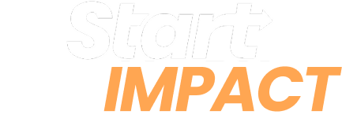
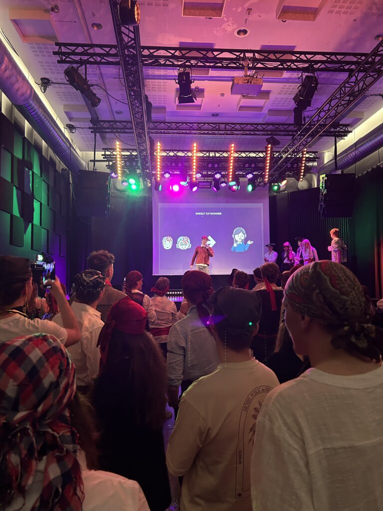
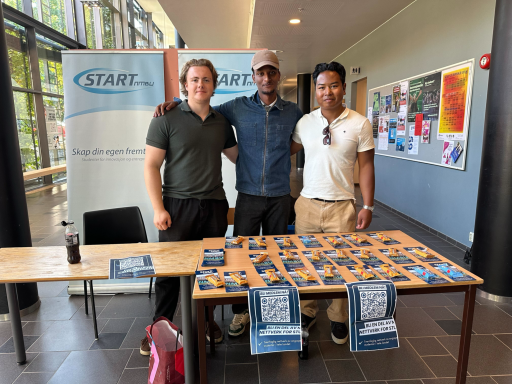
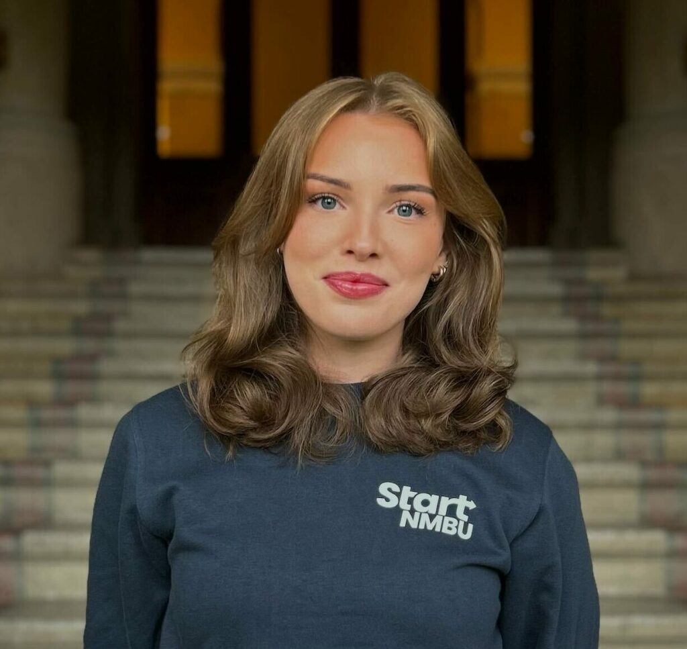

Start Impact er prosjektgruppen som tar ansvar for hvordan Start NMBU fremstår digitalt, visuelt og i møte med omverdenen. Vi håndterer kommunikasjon, profilering og vår offentlige stemme.

En tydelig og engasjerende merkevare
Vi ønsker at Start NMBU skal være tydelig, tilgjengelig og engasjerende både for nåværende medlemmer og for de som vurderer å bli med. Gjennom godt innhold, visuell gjennomføring og dialog bygger vi en sterk og troverdig merkevare.
Historiefortelling og profil
- Planlegging og publisering av innlegg i sosiale medier, nyhetsbrev og blogg.
- Dokumentasjon og deling av arrangementer med foto, video og tekst.
- Utvikling av profilmanual, grafisk uttrykk og visuell identitet.
- Kampanjer og rekruttering for å få flere til å bli med i Start NMBU.
- Samarbeid med de andre gruppene for å sikre sammenheng mellom budskap og aktivitet.


Sandrine Steinland
Prosjektleder
pr@startnmbu.no
Jobb med synlighet og uttrykk
Hvis du liker å se resultater av eget arbeid i form av synlighet, engasjement og design, og ønsker å bidra til at Start NMBU blir gjenkjennelig og attraktiv, så er Start Impact stedet for deg.
Du får mer erfaring med digital markedsføring, visuell produksjon, kommunikasjon og prosjektarbeid.